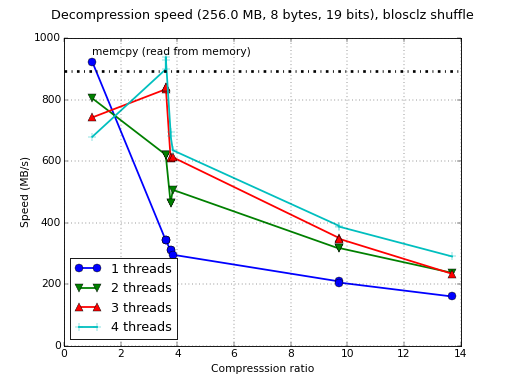
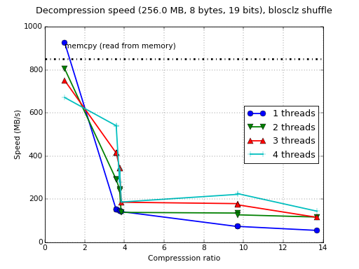
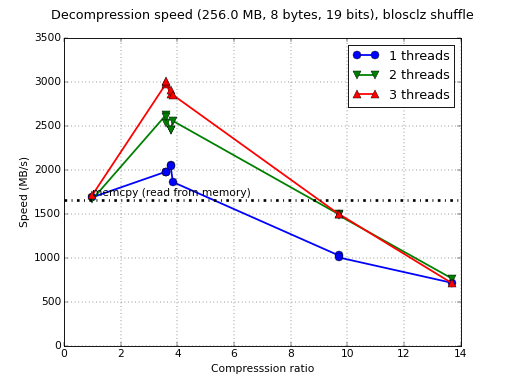
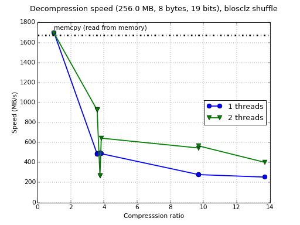

ARM is becoming a first-class citizen for Blosc
We are happy to announce that Blosc is receiving official support for ARM processors. Blosc has always been meant to support all platforms where a C89 compliant C compiler can be found, but until now the only hardware platforms that we were testing on a regular basis has been Intel (on top of Unix/Linux, Mac OSX and Windows).
We want this to change and the ARM architecture has been our first candidate to become a fully supported platform besides Intel/AMD. You may be wondering that we could have chosen any other architecture like MIPS or PowerPC, so why ARM?
ARM is eating the world
ARM is an increasingly popular architecture and we can find implementation exemplars of it not only in the phones, tablets or ChromeBooks, but also acting as embedded processors, as well as in providing computing power to immensely popular Raspberry Pi's and Arduinos and even environments so apparently alien to it like High Performance Computing.
Contrarily to what has been traditional for other computer platforms, one of the most important design features for ARM is to keep energy consumption under very strict limits. Nowadays, the ARM architecture can run decently powerful CPUs where each core consumes just 600 to 750 mWatt or less.
In my opinion, it is precisely this energy efficiency what makes of ARM one of the platforms with more projection to gain ground as a general computer platform in the short future. By now, we all know that ARM allows packing more cores into a single die (e.g. your phone having more cores than your laptop, anyone?). And more cores also means more combined computing throughput (albeit a bit more difficult to program), but more importantly, more cores being able to bring data from memory at the same time. Contrarily to what one might think, having different threads transmitting data from RAM to the CPU caches provides a better utilization of memory buses, and hence, a much better global memory bandwidth. This can be seen, for example, in typical Blosc benchmarks by looking at how the bandwidth grows with the number of threads in all the dots, but specially where compression ratio equals 1 (i.e. no compression is active, so Blosc is only doing a memory copy in this case).
Blosc is getting ready for ARM
So ARM is cool indeed, but what we are doing for making it a first-class citizen? For starters, we have created a new C-Blosc2 repository that is going to act as a playground for some time and where we are going to experiment with a new range of features (those will be discussed in a later post). And this is exactly the place where we have already started implementing a NEON version of the shuffle filter.
NEON is an SIMD extension in the same spirit than SSE2 or AVX2 present in Intel/AMD offerings. NEON extension was introduced in ARMv7 architecture, and is present in most of the current high-end devices (including most of the phones and tablets floating around, including the new Raspberry Pi 2). As many of you know, leveraging SIMD in modern CPUs is key for allowing Blosc to be one of the fastest compressors around, and if we wanted to be serious about ARM, NEON support had to be here, period.
The new NEON implementation of shuffle for Blosc has been entirely made by Lucian Marc, a summer student that joined the project at the beginning of July 2015. Lucian did a terrific work on implementing the shuffle filter NEON, and during the 2-months stage he did not only that, but he also had time to do a preliminary version of the bitshuffle filter as well (not completely functional yet, but as time allows, he plans to finish that).
Some hints on the measured increase in performance
So you might be asking, how fast can perform Blosc on an ARM with NEON? Well, let's start first by showing how fast it works on a Raspberry Pi 2 (Broadcom BCM2836 ARMv7 Quad Core Processor) having NEON and running Raspbian (gcc 4.7.2). To not bore people, we are going to show just decompression speeds:
It turns out that, when using the 4 cores and low compression levels, Blosc with NEON support already shows evidence that it can equal the performance of memcpy() on ARM. This is an important fact because I did not think that ARM performance was enough to allow Blosc doing that already. I was wrong.
Okay, so Blosc using NEON can be fast, but exactly how much when compared to a shuffle implementation in pure C? Here you have the figures for the generic C shuffle:
That means that NEON can accelerate the whole decompression process between 2x and 3x, which is pretty significant, and also speaks highly about the quality of Lucian's NEON implementation.
Does that mean that we can extrapolate these figures for all ARM processors out there? Not quite. In fact, the performance of a Raspberry Pi 2 is quite mild compared with other boards. So, let's see what is the performance on a ODROID-XU3 (although it has been replaced by ODROID-XU4, the XU3 has the same processor, so we are testing a pretty powerful CPU model here). This board comes with a Samsung Exynos5422 Cortex-A15 2.0 GHz quad core and Cortex™-A7 quad core CPUs, so it is a representative of the ARM Heterogeneous Multi-Processing solution (aka big.LITTLE). Here are its figures:
So, the first thing to note is the memcpy() speed that at 1.6 GB/s, is considerably faster than the RPi2 (< 0.9 GB/s). Yeah, this is a much more capable board from a computational point of view. The second thing is that decompression speed almost doubles the memcpy() speed. Again, I was very impressed because I did not expect this range of speeds at all. ARM definitely is getting in a situation where compression can be used for an advantage, computationally speaking.
The third thing to note is a bit disappointing though: why only 3 threads appear in the plot? Well, it turns out that the benchmark suite fails miserably when using 4 threads or more. As the Raspberry setup does not suffer from this problem at all, I presume that this is more related with the board or the libraries that come with the operating system (Ubuntu 14.04). This is rather unfortunate because I was really curious to see such an ARMv7 8-core beast running at full steam using the 8 threads. At any rate, time will tell if the problem is in the board or in Blosc itself.
Just to make the benchmarks a bit more complete, let me finish this benchmark section showing the performance using the generic C code for the shuffling algorithm:
If we compare with NEON figures for the ODROID board, we can see again an increase in speed of between 2x and 4x, which is crazy amazing (sorry if I seem a bit over-enthusiastic, but again, I was not really prepared for seeing this). Again, only figures for 2 threads are in this plot because the benchmark crashes for 3 threads (this is another hint that points to the fault being outside Blosc itself and not in its NEON implementation of the shuffle filter).
At decompression speeds of 3 GB/s and ~ 2 Watt of energy consumption, the ARM platform has one of the best bandwidth/Watt ratios that you can find in the market, and this can have (and will have) profound implications on how computations will be made in the short future (as the Mont Blanc initiative is trying to demonstrate).
What to expect from ARM/Blosc in the forthcoming months
This work on supporting ARM platforms is just the beginning. As ARM processors get more spread, and most specially, faster, we will need to refine the support for ARM in Blosc.
NEON support is only a part of the game, and things like efficient handling of ARM heterogeneous architectures (big.LITTLE) or making specific tweaks for ARM cache sizes will be critical so as to make of ARM a truly first-citizen for the Blosc ecosystem.
If you have ideas on what can be improved, and most specially how, we want to learn from you :) If you want to contribute code to the project, your pull requests are very welcome too! If you like what we are doing and want to see more of this, you can also sponsor us.
Comments
Comments powered by Disqus